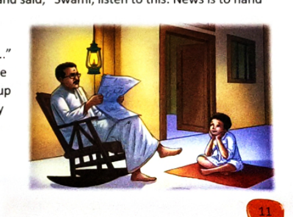
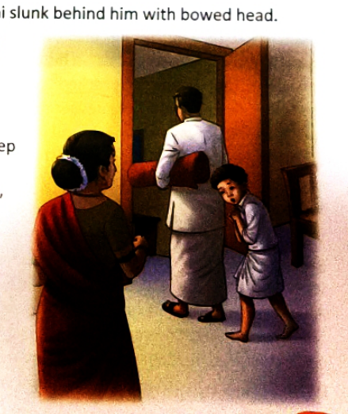
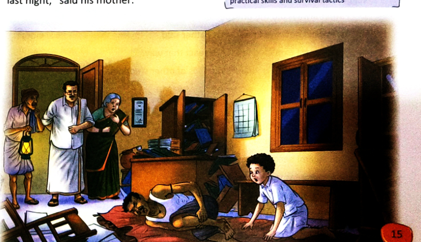
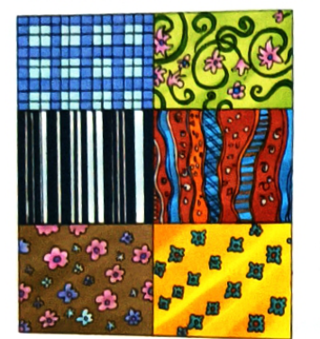
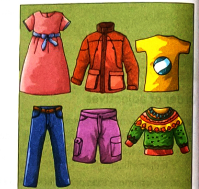
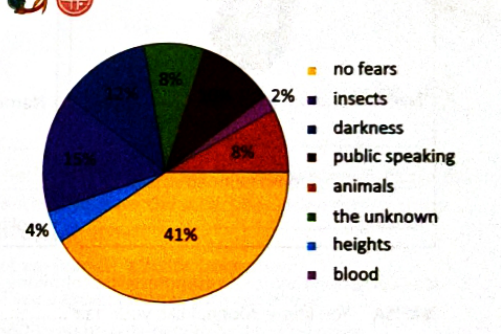

By R.K. Narayan • From Under the Banyan Tree & Other Stories
Class 7 Literature Theme: Courage, Family, Overcoming Fear Accidental Heroism
Starter: What Life Teaches Us
Our experiences, education, and exposure to different perspectives change our worldview—how we relate to ourselves, others, and the world.
Pushti's 4 Core Life Lessons (Noted in class):
Lesson 1 "Failure is the best teacher."
Lesson 2 "Treat people as you want them to treat you."
Lesson 3 "Honesty is the best policy."
Lesson 4 "Shortcuts always make the way longer."
Scene 1: The Challenge at the Hall Lamp
For Swami, events took an unexpected turn. Father looked over the newspaper he was reading under the hall lamp and said, "Swami, listen to this: News is to hand of the bravery of a village lad who, while returning home by the jungle path, came face to face with a tiger ..."
The paragraph described the fight the boy had with the tiger and his flight up a tree, where he stayed for half a day till some people came that way and saved him. After reading it through, Father looked at Swami fixedly and asked, "What do you say to that?"

Father reads the newspaper report under the hall lamp while Swami listens from the floor.
Swami said, "I think he must have been a very strong and grown-up person, not at all a boy. How could a boy fight a tiger?"
"You think you are wiser than the newspaper?" Father sneered. "A man may have the strength of an elephant and yet be a coward; whereas another may have the strength of a straw, but if he has courage he can do anything. Courage is everything, strength and age are not important."
Swami disputed the theory. "How can it be, Father? Suppose I have all the courage, what can I do if a tiger should attack me?"
"Leave alone strength, can you prove you have courage? Let me see if you can sleep alone tonight in my office room."
A frightful proposition, Swami thought. He had always slept beside his granny in the passage, and any change in this arrangement kept him trembling and awake all night. He hoped at first that his father was only joking. He mumbled weakly, "Yes," and tried to change the subject; he said very loudly and with a great deal of enthusiasm, "We are going to admit even elders in our cricket club hereafter. We are buying brand new bats and balls. Our captain has asked me to tell you ..."
"We'll see about it later," Father cut in. "You must sleep alone hereafter."
Swami realized that the matter had gone beyond his control: from a challenge it had become a plain command; he knew his father's tenacity at such moments.
"From the first of next month I'll sleep alone, Father."
"No, you must do it now. It is disgraceful sleeping beside granny or mother like a baby. You are in the second form and I don't at all like the way you're being brought up," he said, and looked at his wife, who was rocking the cradle.
"Why do you look at me while you say it?" she asked. "I hardly know anything about the boy."
"No, no, I don't mean you," Father said.
"If you mean that your mother is spoiling him, tell her so; and don't look at me," she said, and turned away.
Scene 2: The Retreat to Granny's Bed
Swami's father sat gloomily gazing at the newspaper on his lap. Swami rose silently and tiptoed away to his bed in the passage. Granny was sitting up in her bed, and remarked, "Boy, are you already feeling sleepy? Don't you want a story?"
Swami made wild gesticulations to silence his granny, but that good lady saw nothing. So Swami threw himself on his bed and pulled the blanket over his face.
Granny said, "Don't cover your face. Are you really very sleepy?" Swami leant over and whispered, "Please, please, keep quiet, Granny. Don't talk to me, and don't let anyone call me even if the house is on fire. If I don't sleep at once, I shall perhaps die." He turned over, curled, and snored under the blanket till he found his blanket pulled away.
Presently, Father came and stood over him. "Swami, get up," he said. He looked like an apparition in the semi-darkness of the passage, which was lit by a cone of light from the hall. Swami stirred and groaned as if in sleep. Father said, "Get up, Swami."
Granny pleaded, "Why do you disturb him?"
"Get up, Swami," he said for the fourth time, and Swami got up. Father rolled up his bed, took it under his arm, and said, "Come with me." Swami looked at his granny, hesitated for a moment, and followed his father into the office room.

Swami follows Father into the office room with bowed head while Mother and Granny look on.
On the way, he threw a look of appeal at his mother and she said, "Why do you take him to the office room? He can sleep in the hall, I think."
"I don't think so," Father said, and Swami slunk behind him with bowed head.
"Let me sleep in the hall, Father," Swami pleaded. "Your office room is very dusty and there may be scorpions behind your law books."
"There are no scorpions, little fellow. Sleep on the bench if you like."
"Can I have a lamp burning in the room?"
"No. You must learn not to be afraid of darkness. It is only a question of habit. You must cultivate good habits."
"Will you at least leave the door open?"
"All right. But promise you will not roll up your bed and go to your granny's side at night. If you do it, mind you, I will make you the laughing stock of your school."
Scene 3: The Terrors of the Night
Swami felt cut off from humanity. He was pained and angry. He didn't like the strain of cruelty he saw in his father's nature. He hated the newspaper for printing the tiger's story. He wished that the tiger hadn't spared the boy, who didn't appear to be a boy after all but a monster ...
As the night advanced and the silence in the house deepened, his heart beat faster. He remembered all the stories of devils and ghosts he had heard in his life. How often had his chum Mani seen the devil in the banyan tree at his street-end. And what about poor Munisami's father who spat out blood because the devil near the river's edge slapped his cheek when he was returning home late one night. And so on and on his thoughts continued. He was faint with fear. A ray of light from the street strayed in and cast shadows on the wall. Through the stillness all kinds of noises reached his ears—the ticking of the clock, rustle of trees, snoring sounds, and some vague night insects humming. He covered himself so completely that he could hardly breathe. Every moment he expected the devils to come up to carry him away; there was the instance of his old friend in the fourth class who suddenly disappeared and was said to have been carried off by a ghost to Siam or Nepal.
Swami hurriedly got up and spread his bed under the bench and crouched there. It seemed to be a much safer place, more compact and reassuring. He shut his eyes tight and encased himself in his blanket once again and unknown to himself fell asleep, and in sleep was racked with nightmares.
A tiger was chasing him. His feet stuck to the ground. He desperately tried to escape but his feet would not move; the tiger was at his back, and he could hear its claws scratch the ground ... scratch, scratch, and then a light thud ... Swami tried to open his eyes, but his eyelids would not open and the nightmare continued. It threatened to continue forever. Swami groaned in despair.
With a desperate effort he opened his eyes. He put his hand out to feel his granny's presence at his side, as was his habit, but he only touched the wooden leg of the bench. And his lonely state came back to him. He sweated with fright. And now what was this rustling? He moved to the edge of the bench and stared into the darkness. Something was moving down. He lay gazing at it in horror. His end had come. He realized that the devil would presently pull him out and tear him, and so why should he wait?
Scene 4: The Accidental Hero
As it came nearer, he crawled out from under the bench, hugged it with all his might, and used his teeth on it like a mortal weapon ...
"Aiyo! Something has bitten me," went forth an agonized, thundering cry and was followed by a heavy tumbling and falling amidst furniture. In a moment Father, cook, and a servant came in, carrying light.
And all three of them fell on the burglar who lay amidst the furniture with a bleeding ankle.

Father, the cook, and the servant overpower the notorious housebreaker whose ankle Swami bit in self-defence!
Congratulations were showered on Swami next day. His classmates looked at him with respect, and his teacher patted his back. The headmaster said that he was a true scout. Swami had bitten into the flesh of one of the most notorious housebreakers of the district and the police were grateful to him for it.
The Inspector said, "Why don't you join the police when you are grown up?"
Swami said for the sake of politeness, "Certainly, yes," though he had quite made up his mind to be an engine driver, a railway guard, or a bus conductor later in life.
When he returned home from the club that night, Father asked, "Where is the boy?"
"He is asleep."
"Already!"
"He didn't have a wink of sleep the whole of last night," said his mother.
"Where is he sleeping?"
"In his usual place," Mother said casually. "He went to bed at seven-thirty."
"Sleeping beside his granny again!" Father said. "No wonder he wanted to be asleep before I could return home—clever boy!"
Mother lost her temper. "You let him sleep where he likes. You needn't risk his life again ..." Father mumbled as he went in to change, "All right, mollycoddle and spoil him as much as you like. Only don't blame me afterwards ..."
Swami, following the whole conversation from under the blanket, felt tremendously relieved to hear that his father was giving him up.
About the Author: R.K. Narayan (1906–2001)
Rasipuram Krishnaswami Iyer Narayanaswami was one of India's greatest and earliest English novelists. He is world-renowned for creating the enchanting, fictional South Indian town of Malgudi. His stories capture everyday Indian middle-class life with subtle humour, warmth, and deep psychological insight into human nature. He lived to the age of 95.
Section A: Multiple Choice Questions
1a"For Swami, events took an unexpected turn in the beginning of the story" suggests that:Factual / Inferential
A Father always did the unexpected.
B Swami did not ever know what Father said.
C Swami least expected Father to react that way.
D Father always gave Swami examples of other students.
Correct Option: C — Swami was casually listening to the news story, expecting it to be just another conversation. He least anticipated that Father would turn it into a personal challenge and command him to sleep alone in the dark office room!
1bFather's intent in telling Swami the story was to:Inferential
A ridicule Swami's childish habits.
B mock Swami's cowardice.
C tell Granny to not indulge him.
D help Swami become brave and courageous.
Correct Option: D — Father believed that courage is a matter of habit and mindset. He wanted to break Swami's dependence on sleeping beside his granny and train him to cultivate courage and independence.
Section B: Short & Long Answer Questions
2aWhat story did Swami's father read to him?Factual
Recall the news report mentioned under the hall lamp.
Answer: Swami's father read a newspaper report describing the bravery of a village lad who, while returning home by a jungle path, came face-to-face with a tiger. The boy fought the tiger and stayed up a tree for half a day until some villagers came by and rescued him.
2bWhat habit of Swami's did Father find disgraceful?Factual
Focus on Swami's sleeping habits and his age/class.
Answer: Father found it disgraceful that Swami, who was already studying in the second form (equivalent to Class 7/8), still slept beside his grandmother or mother in the passage like a helpless baby, trembling in fear whenever there was darkness.
2cWhy did Swami find the idea of sleeping in his father's office 'a frightful proposition'? How did he try to avoid the situation?Inferential & Detailed
Answer:
Why frightful: Swami had always slept beside his granny in the passage. Darkness terrified him, and any alteration in this arrangement kept him trembling and awake all night with dread of ghosts and devils.
How he tried to avoid it:
He tried changing the subject loudly by enthusiastically talking about admitting elders to their cricket club and buying new bats.
He offered to sleep alone from the first of next month.
He tiptoed to his bed early and pretended to be fast asleep under the blanket.
He warned that the office room was full of dust and scorpions behind law books.
He pleaded to sleep in the hall instead or to keep a lamp burning.
2dAs the night advanced, Swami felt that something dreadful would happen to him. What did he think would happen?Inferential
Answer: As the silence deepened, Swami remembered all the terrifying stories of devils and ghosts he had heard. He recalled his friend Mani seeing a devil in the banyan tree, Munisami's father spitting blood after being slapped by a riverside devil, and an old classmate who was whisked away by a ghost to Siam or Nepal. He feared that devils would emerge from the pitch darkness at any moment to tear him to pieces or carry him away.
2eThere was absolute silence in the room. But some noises reached Swami's ears. What were they?Factual
Answer: Through the stillness of the dark office room, Swami heard:
The rhythmic ticking of the clock
The gentle rustle of trees outside
Snoring sounds coming from other parts of the house
The vague humming of nocturnal insects
2fHow did Swami help in preventing the burglary?Key Plot Question
Answer: Seeing a dark silhouette moving down into the room, Swami mistook it for a devil coming to kill him. Driven by desperate self-preservation, he crawled out from under the bench, lunged forward, hugged the figure tightly with all his strength, and sank his teeth deep into its ankle like a deadly weapon. The burglar gave an agonized cry ("Aiyo!") and fell amidst the furniture. The noise alerted Father, the cook, and a servant, who rushed in with light and overpowered the notorious housebreaker.
Compound Words
Compound words are formed when two or more words are combined to make a single new word with a distinct meaning. They can be closed (newspaper, banyan), hyphenated (grown-up, brand-new, half-a-day), or open (ice cream, office room).
1Combine words from the box to form compound adjectives describing people:Textbook Exercise 1
middle • length • green • oval • looking • built • good • hair • dark • spoken • face • soft • age • shoulder • pale • long • curly • nature • well • short • complexion • legged • eye
Suspect 1: "The suspect is a rough-looking, broad-shouldered man with a dark-bearded face, wearing a wide-brimmed blue hat. He is fierce-eyed and heavy-built."
Suspect 2: "The suspect is a middle-aged, pale-complexioned man with grey-haired temples and an oval-faced structure. He looks stern-visaged and thin-lipped."
3Complete the Conversation between Nafisa & Mona using Compound Words:Dialogue Activity
NAFISA: You know, Mona, I like your hair ................................
MONA: Yes, I do too. But it was so hot and humid in Goa that I had to get my hair cut shorter. But my fortnight in Goa was so beautiful and rejuvenating that I didn't even care that I was getting so tanned.
NAFISA: Well, all I will say is that you are very ................................ from the Goa sun, and are as ................................ as ever.
MONA: Thank you, Nafisa. But the sea, the waves, the sun and the moon plying the sea with their light are as beautiful and awe-inspiring as I had thought my first visit to a seaside would be.
When more than one adjective qualifies a noun, native English follows a specific natural sequence:
O
S
A
S
C
O
M
P
Noun
Opinion
Size
Age
Shape
Colour
Origin
Material
Purpose
—
silly
—
young
—
—
English
—
—
boy
—
big
—
round
—
—
metal
—
tray
—
small
—
—
red
—
—
sleeping
bag
💡 Memory Tip: Remember O-S-A-S-C-O-M-P ("Only Smart And Strong Children Own Marvelous Pets").
1Check whether adjectives are placed in correct order. Rewrite correctly:Textbook Exercise 1
a. Caesar is my tall trustworthy two-year-old athletic Doberman.
b. Where the road curves you'll see a green gloomy brick old house.
c. She has written a detective 560-page heavily-researched boring novel.
d. The triangular blue-walled large meeting room was designed by my brother.
Corrected Sentences:
Caesar is my trustworthy (opinion), athletic (opinion), tall (size), two-year-old (age) Doberman.
Where the road curves you'll see a gloomy (opinion), old (age), green (colour), brick (material) house.
She has written a boring (opinion), heavily-researched (opinion), 560-page (size/length), detective (purpose) novel.
The large (size), triangular (shape), blue-walled (colour) meeting room was designed by my brother.
2Make sentences using at least three adjectives for the patterns & clothing:Visual Application


Model Sentences (3+ Adjectives in order):
Emma bought a pretty (opinion), knee-length (size), pink (colour) cotton dress.
The boy wore a stylish (opinion), warm (opinion), orange (colour) winter jacket.
Mother selected a lovely (opinion), square (shape), blue-and-white (colour) checked fabric for the cushion.
Grandpa gifted me a cozy (opinion), woollen (material), green (colour) patterned sweater.
3Correct the order of adjectives and rewrite:Textbook Exercise 3
a. Sara is wearing a blue nice dress for the party tonight.
b. Mr Acharya is the young nice kindly man you met the other day at my house.
c. The new restaurant serves South Indian spicy delicious food.
d. The old room on the terrace was musty unclean and dark.
e. The tall strange old man you met the other day is my cousin.
Corrected Sentences:
Sara is wearing a nice (opinion) blue (colour) dress for the party tonight.
Mr Acharya is the nice (opinion), kindly (opinion), young (age) man you met the other day at my house.
The new restaurant serves delicious (opinion), spicy (opinion), South Indian (origin) food.
The old room on the terrace was unclean (opinion), musty (opinion), and dark (condition).
The strange (opinion), tall (size), old (age) man you met the other day is my cousin.
4Basic Rules of Punctuation — Complete the Rules:Study Skills
sets off a clause • a piece of dialogue • letters in contraction • in a list • an exclamation mark (!)
A sentence may end with a period (.), a question mark (?) or an exclamation mark (!).
The most common use of the comma (,) is in a list with three or more items.
The semicolon (;), colon (:), and dash (—) can be effective when used sparingly. The colon originally referred to a section of a poem; later it came to denote a clause in a sentence and finally a mark that sets off a clause.
The apostrophe (') is used to signify possession or to show the omission of letters in contraction (e.g., do not as don't).
Quotation marks (" ") are used in pairs to set off a quotation or a piece of dialogue.
5Editing Task: Punctuate Ms. Jenny Peters' Letter to Her Students:Editing Practice
Ms. Jenny Peters deliberately left out all capitalisation and punctuation marks to test your skills:
dear students
im very excited we have so much to learn and discover this year and it all starts with you i expect you to attend school regularly while you are in class you ought to be cooperative attentive and friendly to all i would expect you to work hard and regularly
im sure when school reopens everything will seem new and exciting but when its time to get to real work the excitement might disappear you must not let this thrill fade away as a teacher i would like to tell you that i really care about you i love teaching you can expect me to keep a well organized classroom i believe we work best if the environment is neat clean and pleasant
i shall communicate with your parents regularly and let them know how you are doing in school i hope that the year is a fruitful one for you i am sending you your first assignment in the form of this letter which you will have to correctly punctuate and bring along when you come to school
best wishes
ms jenny peters
Properly Punctuated & Capitalized Letter:
Dear students,
I'm very excited! We have so much to learn and discover this year, and it all starts with you. I expect you to attend school regularly. While you are in class, you ought to be cooperative, attentive, and friendly to all. I would expect you to work hard and regularly.
I'm sure when school reopens, everything will seem new and exciting, but when it's time to get to real work, the excitement might disappear. You must not let this thrill fade away! As a teacher, I would like to tell you that I really care about you. I love teaching. You can expect me to keep a well-organized classroom; I believe we work best if the environment is neat, clean, and pleasant.
I shall communicate with your parents regularly and let them know how you are doing in school. I hope that the year is a fruitful one for you. I am sending you your first assignment in the form of this letter, which you will have to correctly punctuate and bring along when you come to school.
Best wishes, Ms. Jenny Peters
Higher Order Thinking (HOTS)
Critical Thinking & Life Connections
These questions require you to step into the characters' shoes, weigh different philosophies, and connect literature to your own life.
1A report about a boy in the newspaper was an unexpected event in Swami's life that led to an argument between Swami and Father. With whose view would you agree more? Why?Debate / Evaluation
Model Answer & Balanced Take:
Both viewpoints have valid merit, but Swami's pragmatic skepticism is closer to reality for a twelve-year-old:
Swami's View (Realistic): Swami rightly points out that pure courage without physical strength or tactical means is suicidal against a Bengal tiger. A young boy cannot overpower a 200 kg predator through willpower alone; in the news story, the boy survived not by attacking the tiger, but by prudently fleeing up a tree and staying there for half a day until armed adults arrived.
Father's View (Philosophical): Father argues that "Courage is everything; strength and age are not important." He wants to instill mental toughness and prevent Swami from giving in to irrational fears.
Conclusion: While Father's motive to build resilience is noble, his expectation that courage alone can overcome physical danger is impractical. True bravery involves wisdom, self-control, and calculated action—not recklessness.
2What was Swami's father's idea of courage? Why did Swami not agree with his idea?Character Analysis
Answer:
Father's Idea: Father believed that courage is an absolute, internal state of mind that outweighs physical size, age, or brute strength. He maintained that a man with the strength of an elephant could be a coward, whereas someone with the physical frailty of a straw could achieve anything if armed with courage. Furthermore, he believed that courage could be cultivated by deliberately conquering darkness and fear through habit.
Why Swami Disagreed: Swami was an ordinary, imaginative schoolboy. To him, danger was tangible and physical. He could not comprehend how courage alone could stop a tiger from mauling him, or prevent imaginary devils in a pitch-dark room from dragging him away. Swami viewed fear not as a moral failing, but as a natural human instinct.
3Swami's mother and grandmother were different from his father. How? Whose point of view do you agree with more? Why?Comparative Perspective
Answer:
Contrast in Parenting Styles:
Mother & Granny (Nurturing & Empathetic): Granny provides unconditional warmth, security, bedtime stories, and protection. Mother defends Swami against what she sees as unnecessary cruelty, warning Father: "You needn't risk his life again." They prioritize his emotional comfort and well-being.
Father (Authoritarian & Demanding): Father is stern, rational, and focused on discipline. He fears that excessive pampering ("mollycoddling") will make Swami soft, dependent, and cowardly in adulthood.
Which view is better? A balanced approach is best. Constant pampering might delay independence, but sudden harsh isolation in the dark causes trauma rather than genuine confidence. Courage is best fostered through gradual encouragement, not terror.
4Do you think Swami deserved the applause he got? Why?Irony & Themes
Answer:
This is the central situational irony of R.K. Narayan's story:
Outcome: Swami captured one of the district's most wanted, dangerous housebreakers, saving the household and aiding the police. From the perspective of society, the outcome was heroic, and he brought honour to his school.
Reality: Swami acted entirely out of blind, frantic panic. Convinced that the moving silhouette was a devil about to tear him apart, he bit the intruder's ankle purely in a desperate bid to defend his life. He was shivering under the bench the entire night.
Verdict: Swami was an accidental hero. While he did not possess the calculated bravery the headmaster and inspector attributed to him, his instinctive act of fighting back when cornered displayed an innate survival grit that few children would have shown.
5Cross-Curricular Connect: Understanding Phobias & Nyctophobia:Psychology & Data Analysis
A phobia is an excessive, persistent, and unrealistic fear of a specific object, person, animal, activity, or situation.
Nyctophobia is the extreme fear of darkness or night. In the story, Swami suffers from acute nyctophobia—his mind amplifies darkness with demons, whispering trees, and terrifying memories.
Common Human Fears (Survey Breakdown):
The Unknown: 41% (Highest fear!)
Darkness (Nyctophobia): 15%
Heights (Acrophobia): 12%
Public Speaking (Glossophobia): 8%
Animals / Snakes: 8%
Blood (Hemophobia): 8%
Insects: 4%
No Fears: 2%

Distribution of fears across young students
💡 How to overcome Nyctophobia / fears: Gradual exposure (sleeping with a dimmer night light), mindfulness breathing, cognitive reframing (realizing that darkness is simply the absence of light, not the presence of monsters), and open conversation with parents.